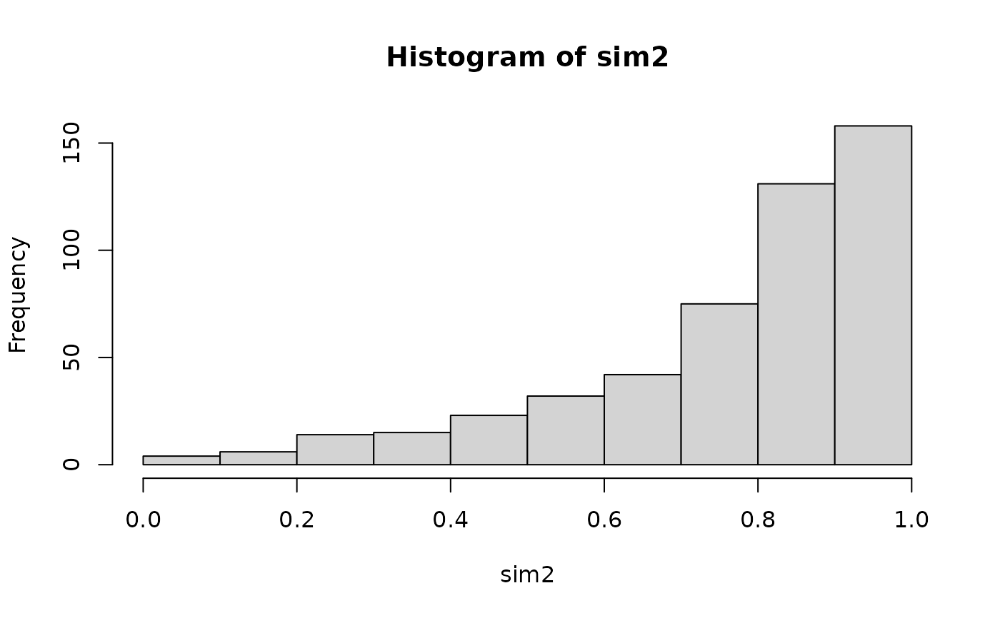

This function simulates from a parametric bivariate copula, where on of
the variables is fixed. I.e., we simulate either from
\(C_{2|1}(u_2|u_1;\theta)\) or \(C_{1|2}(u_1|u_2;\theta)\), which are both
conditional distribution functions of one variable given another.
BiCopCondSim(N, cond.val, cond.var, family, par, par2 = 0, obj = NULL,
check.pars = TRUE)
Arguments
| N |
Number of observations simulated. |
| cond.val |
numeric vector of length N containing the values to
condition on. |
| cond.var |
either 1 or 2; the variable to condition on. |
| family |
integer; single number or vector of size N; defines the
bivariate copula family:
0 = independence copula
1 = Gaussian copula
2 = Student t copula (t-copula)
3 = Clayton copula
4 = Gumbel copula
5 = Frank copula
6 = Joe copula
7 = BB1 copula
8 = BB6 copula
9 = BB7 copula
10 = BB8 copula
13 = rotated Clayton copula (180 degrees; ``survival Clayton'')
14 = rotated Gumbel copula (180 degrees; ``survival Gumbel'')
16 = rotated Joe copula (180 degrees; ``survival Joe'')
17 = rotated BB1 copula (180 degrees; ``survival BB1'')
18 = rotated BB6 copula (180 degrees; ``survival BB6'')
19 = rotated BB7 copula (180 degrees; ``survival BB7'')
20 = rotated BB8 copula (180 degrees; ``survival BB8'')
23 = rotated Clayton copula (90 degrees)
24 = rotated Gumbel copula (90 degrees)
26 = rotated Joe copula (90 degrees)
27 = rotated BB1 copula (90 degrees)
28 = rotated BB6 copula (90 degrees)
29 = rotated BB7 copula (90 degrees)
30 = rotated BB8 copula (90 degrees)
33 = rotated Clayton copula (270 degrees)
34 = rotated Gumbel copula (270 degrees)
36 = rotated Joe copula (270 degrees)
37 = rotated BB1 copula (270 degrees)
38 = rotated BB6 copula (270 degrees)
39 = rotated BB7 copula (270 degrees)
40 = rotated BB8 copula (270 degrees)
104 = Tawn type 1 copula
114 = rotated Tawn type 1 copula (180 degrees)
124 = rotated Tawn type 1 copula (90 degrees)
134 = rotated Tawn type 1 copula (270 degrees)
204 = Tawn type 2 copula
214 = rotated Tawn type 2 copula (180 degrees)
224 = rotated Tawn type 2 copula (90 degrees)
234 = rotated Tawn type 2 copula (270 degrees)
|
| par |
numeric; single number or vector of size N; copula
parameter. |
| par2 |
numeric; single number or vector of size N; second
parameter for bivariate copulas with two parameters (t, BB1, BB6, BB7, BB8,
Tawn type 1 and type 2; default: par2 = 0). par2 should be a
positive integer for the Students's t copula family = 2. |
| obj |
BiCop object containing the family and parameter
specification.
|
| check.pars |
logical; default is TRUE; if FALSE, checks
for family/parameter-consistency are omitted (should only be used with
care). |
Value
A length N vector of simulated from conditional distributions
related to bivariate copula with family and parameter(s) par,
par2.
Details
If the family and parameter specification is stored in a BiCop
object obj, the alternative version
BiCopCondSim(N, cond.val, cond.var, obj)
can be used.
See also
Examples
hist(sim[, 2]) # data have uniform distribution
# simulate 500 observations of (U2 | U1 = 0.7)
sim1 <- BiCopCondSim(500, cond.val = 0.7, cond.var = 1, obj)
hist(sim1) # not uniform!
# simulate 500 observations of (U1 | U2 = 0.1)
sim2 <- BiCopCondSim(500, cond.val = 0.1, cond.var = 2, obj)
hist(sim2) # not uniform!
